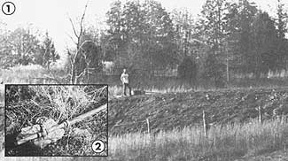
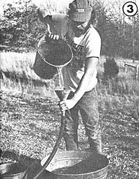
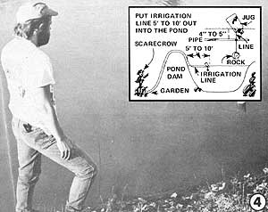

Dear friends out there) in Rural Land, and those who hope to be: Don't despair if you couldn't (still can't) afford to buy a piece of acreage with a river, creek, or spring on it. That's no reason for your garden to dry up every summer for lack of water. Mother Nature, in her gravitational largess, has given you Pond, and Siphon, and Drainpipe . . . and all three are quite easy to use.
I believe it is generally accepted that pond water-which contains dissolved nutrients leached out of the soil-is superior to well, creek, or spring water for irrigation. If you're still looking for land, then, you'd be wise to check out any prospective piece of property with an eye open for a hill or slope that can accommodate a pond on its top or side . . . and a garden at its foot. And if you've already bought your homestead, I hope you're lucky enough to have such a hill somewhere on the place.
We have just such a situation on our 40 acres down here in the Missouri Ozarks. And halfway up what has become our favorite slope-right across a gully that used to fill with runoff during heavy rains-we've built a dam. And at the bottom of that hill, ten feet below the surface of the pond which now stands behind the dam (and off to one side where natural overflows from the reservoir never reach), we've put in a half-acre garden (see Fig. 1).
So much for the pond. Our drainpipe is 200 feet of 3/4" black plastic (PVC) pipe which runs from within the mini-lake, over the dam, and down to the garden. The upper end of the drain is wide open (if your pond contains a lot of floating trash, it might be a good idea to put a screen over your pipe's inlet), and the drain's outlet end is fitted with an ordinary on/off valve or tap or spigot such as is used as an outdoor faucet on most home waterlines. We've screwed two pieces of threaded (on both ends) 1/2" galvanized iron pipe into the valve's inlet and outlet openings (see Fig. 2). The PVC pipe is securely fastened to the first with hose clamps and, any time we want to, we can screw an ordinary garden hose onto the second.
We've set our waterline up this way, of course, so that the plastic pipe-which won't take much bending or stress-can remain more or less stationary while we drag the attached hose around to water the far corners of the garden.
And, in case you're wondering why we used PVC pipe for our siphon line (since the plastic is known to be a carcinogen in its raw industrial powder form): [1] There is no real evidence that PVC causes cancer after the plastic has been processed into finished products, and [2] we don't have a lot of money and, at 10d a foot, PVC was about the only kind of pipe we could afford.
This in no way implies that you should make the same decision. If you can scrounge up enough serviceable old metal pipe or can afford enough new metal pipe or garden hose for your siphon line, feel free to use them. They may cost somewhat more but they'll do the job as well as-or, perhaps, better than-our PVC. Just make sure that the pipe or hose you do use is airtight, even if that requires some patching. Otherwise, you'll have a difficult time setting up and maintaining the siphoning action you're trying to create.
Trying to put a 100- or 200-foot-long siphon into action can be frustrating (you can't just suck on one end of the pipe to get the siphon going). On the other hand, you only have to do the chore once a year and, if you know how to go about it, it isn't much of a chore anyway.
First make sure that the whole length of siphon pipe-from the pond on the top end to the shutoff valve at the bottom-is free of all holes or tears that might cause a loss of suction. (Siphoning action is a function of gravity, air pressure, and the friction of the fluid going through a pipe in relation to the line's diameter. And of all these factors, air pressure will soon come to seem the most important if you try to set up a siphon through a leaky line . . . which is why we quickly replaced our original patched-together system of old hoses and scrounged pipe with a line of new PVC.)
Too many humps and loops-or any kind of kink-in a pipe can be bad news for a siphon too. So lay your line out full length as straight and with as constant a fall as possible. That's what we did with ours.
Next, two of us-one at the bottom to work the valve (which, initially, should be open to prevent air locks in the line) and the other at the top-started the siphon. I drew the job at the upper or dam end of the line which consisted (Fig. 3) of standing right on top of the dam and pouring a washtub and several buckets full of pond water (carried up, of course, from the reservoir) into the pipe through a funnel.
I kept pouring until Brian-the other half of our dynamic duo-yelled that the water was coming out the bottom. At that point he closed the valve on his end of the pipe and I continued pouring until my funnel overflowed. Aha! The line was full . . . so I quickly removed the funnel, stuck my end of the PVC into a full five-gallon bucket of water, and hollered for Brian to reopen the valve.
At first, nothing much happened (there must have been a little air still in the line) and I was ready to give up . . . when-suddenly!-my bucket began to empty as if its bottom had fallen out. It was all I could do to run-sliding-down the dam to the pond (while holding the end of the pipe underwater in the bucket all the while) and throw the whole works-bucket, pipe, and myself-into the reservoir seconds before all the liquid was sucked from the pail (the siphon, of course, would have been ruined and we'd have had to start all over again if I'd have let the bucket run dry).
And the moral of this story is: [1] Make darn sure you've got enough extra pipe or hose coiled up on top of the dam to reach all the way to the water in your pond, and [2] have a clean path cleared from the top of the dam straight through to the water below before you start your siphon . . . or you may not make it to the lake before your bucket runs dry.
If the level of the water in your reservoir is subject to noticeable fluctuation or if there's a great deal of trash floating on its surface or if you just want to finish your siphon installation off right, there's one final refinement you'll probably want to add to the system.
Pull the upper end of your drainpipe or hose five to ten feet out into your little lake. Then-using an empty gallon jug, some stout nylon line or baling wire, and a rock, piece of scrap iron, or some other weight-secure the open inlet of the hose so that it will stay suspended four to five inches beneath the water's surface (safely below floating debris) no matter how much-within reasonable limits-the pond's level may vary (see Fig. 4).
You're home free. You've now got a gravity-powered pump all set up to pull water from your pond . . . up over the mini-lake's dam . . . and down to the thirsty garden on the other side any time you want it to. And believe me: It's really a rush, in the middle of a drought-blighted summer, to saunter out to the ole garden . . . casually turn a spigot . . and then watch as one of the forces of nature (gravity) revitalizes the whole vegetable patch with spring rains that you've stored in a simple depression in the earth.
Depending on the amount of drop from your pond's surface to your garden, you may even be surprised by the pressure your siphon generates. We can squirt water five or six feet from our garden's hose when we put our thumbs over the end of the line.
You also may be amazed by the capacity of your pond, even if-as in our case-it's a small one. Last summer down here was an almost rainless one and we watered our garden eight and ten hours at a time and overnight for weeks . . . yet there never was a discernable drop in the level of our reservoir.
OK. Now that you know what your pond and gravity can do, why not take the idea a little further? For instance: If the amount of fall from the surface of the reservoir to your garden is greater than your height . . . you can set up a shower right out there amongst the melons and the roasting ears. Just take a piece of hose and jam it onto the outlet pipe coming out of your on/off valve. Then run the hose up and securely tape it to an old tin can that you've punched full of holes and nailed to a post or tree. That way, whenever you've worked up a sweat hoeing the beans or weeding the onions, you can just take a few steps over to your "refreshment center" . . . open the valve . . . and cool off while the shower rinses all that dirt and tiredness away. What a way to run a garden!
And if that ain't fancy enough to suit you and you're still looking forward to the construction of your pond, you can take this whole idea one step further yet. Forget the siphon altogether and build a good drainpipe (complete, of course, with on/off valve) right into the base of the dam. Then, whenever you want to irrigate your garden or take a shower, all you'll have to do is hook a pipe or hose to the permanent valve . . . and you'll have the use of all the water in the reservoir without ever having to start a siphon.
Another tip: The U.S. Department of Agriculture will pay for half the cost of surveying, digging, fencing, and drainpiping a pond in most rural areas of the country. Contact your county agent for further information.
Putting in a pond involves a certain expenditure of time, energy, thought, and money. But it's one of those investments-just like the construction of a solar heating system for your house-that can repay you far more throughout its useful life than it costs.
It's also kinda nice to build something like a pond which-if we use our bulldozers and backhoes rationally and then take the necessary steps to heal the reservoir's banks with grass, hedges, and flowers-can make our lives a great deal richer without harming the environment at all.
|
 |
 |
 |